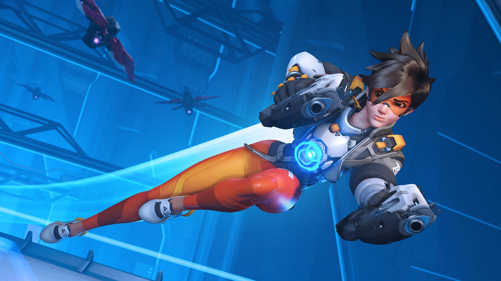
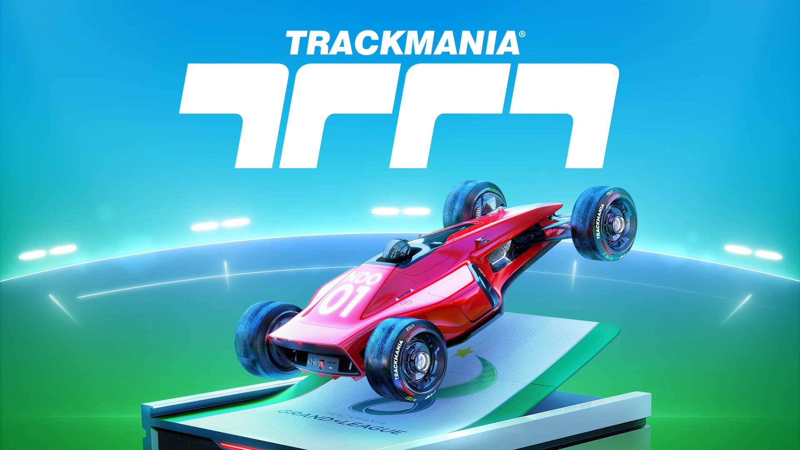
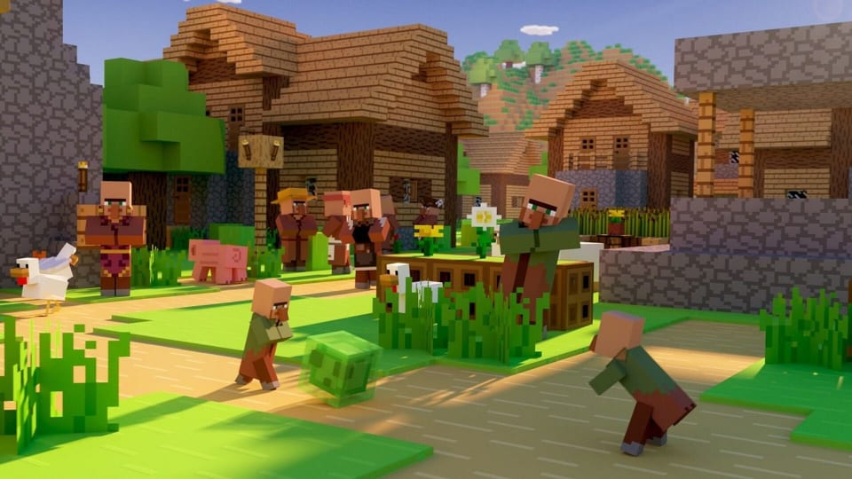

Qu'est-ce qui fait que j'aime les jeux-vidéos ?
En effet ma passion sont les jeux-vidéos. J'y ai commencé à l'âge de 4 ans avec ma première console qui est la Nintendo DS. Je suis rapidement devenu passionné de se domaine et l'ai toujours aujours'hui et c'est pour ça que je fais cette page web.
J'ai joué à toutes sortes de jeux commes des FPS, MMO, RPG, MOBA, ... Mais ce que je préfère sont les jeux multijoueur compétitif. Effectivement je suis quelqu'un de très compétitif. Je vais me donner au max pour atteindre la victoire.
Ce que les jeux peuvent m'apporter
Comme beaucoup le penses, non les jeux ne nous abrutisent pas. Au contraire, cela développe le sense de l'observation, améliore les réflexes, développe un esprit de compétition et même gérer une équipe.
Présentation de quelques jeux auquels je joue
Overwatch 
Un fast FPS à 6 joueurs contre 6 joueurs. Le but est de capturer des points sur différentes cartes proposés par le jeu. La mécanique du jeu est qu'il éxiste différents rôles (Tank, dps, support). Le tank possède beaucoup de points de vie mais est très facile à toucher. Son rôle est de diriger son équipe et de prendre un maximum d'espace. Le dps (dégâts par secondes) n'a pas beacoup de points de vies mais fait très mal. Il sert à faire des dégâts et à finir les combats. le dernier rôle est celui de support. Il va principalement soigner son équipe. C'est le rôle le plus vulnérable du jeu. Il faudra donc le protéger.
La cohésion d'équipe est primordiale pour gagner. Il faudra donc bien choisir sa composition si on veut être en avantage.
Classement : Maître
Trackmania 
Trackmania est un jeu de course arcade très compétitif et très punitif. Une fausse manoeuvre peut coûter plusieurs secondes. Le but est simple, terminer la course en un minimum de temps. Tout le monde possède la même voiture. Il n'y a donc pas de désiquilibre sur la course. Le niveau fait le classement.
Classement : top 3 Haut-Rhin : top 813 monde
Minecraft 
Minecraft est un fps où on peut littéralement tout faire. Notre seul limite est notre imagination. La particularité de ce jeu est qu'il est fait de cube. On peut construire, détruire, partir à l'aventure, miner, se battre... On peut littéralement tout faire. De plus il existe un mode créatif qui permet de construire les constructions de nos rêves et de mieux comprendre comment fonctionne le jeu.
Personnellement je préfère l'aspect PvP (joueur contre joueur) qui me fascine depuis toujours.